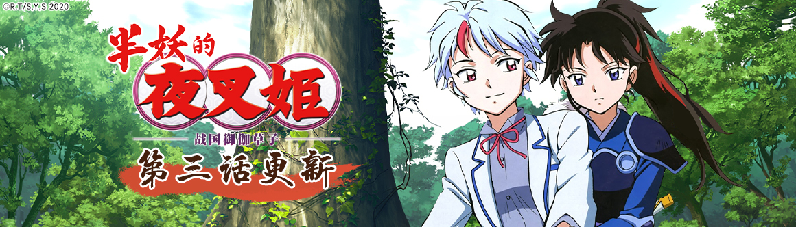

最近跟新
- 忍者收藏跟新至 11话
- 被神捡到的男人跟新至 3话
- 忧国的莫里斯跟新至 2话
- 无能力者娜娜跟新至 3话
- 博人传跟新至 170话
- 成神之日跟新至 130话
- 排球少女！跟新至 12话
- 体操骑士跟新至 3话
最近跟新
连载动画
在地下城寻求邂逅是否搞错了什么 第三季
613.5万播放 · 4.9万弹幕 · 246.1万系列追番
番剧连载中, 每周六 01:00更新
通往地心深处——深渊的“地下城”。城市的名字是迷宫都市欧拉丽。女神赫斯缇雅与冒险者贝尔·克朗尼，一如既往地是主神和仅仅一名眷族的最小构成。但达成了世界最快升级这一伟业的贝尔，开始受到前所未有的的万众瞩目——迷宫中的相遇，以及冒险——这是再次开始编织的，少年所走过的，女神所记录的【眷族物语】这座城市住着众多的神，其中心存在着通往地心深处——深渊的“地下城”。城市的名字是迷宫都市欧拉丽。女神赫斯缇雅与冒险者贝尔·克朗尼，一如既往地是主神和仅仅一名眷族的最小构成。但达成了世界最快升级这一伟业的贝尔，开始受到前所未有的的万众瞩目——迷宫中的相遇，以及冒险——这是再次开始编织的，少年所走过的，女神所记录的【眷族物语】
Re：从零开始的异世界生活
2.2亿播放 · 1148万弹幕 · 773万系列追番
番剧已完结, 全25话
暴力，甚至是死亡……“死亡重置”——无力的少年拥有的唯一能力，能将死后时间倒转回一开始。使用了这般力量，便会失去过去的回忆，可为了守护最重要的人们，昴必须抗争到底。“即使你忘却了我，我也不会遗忘你。”在异世界陷入迷茫的普通高中生菜月昴，邂逅了一位银发的美少女。但想助她一臂之力的昴，却一次次地遭遇敌袭，背叛、暴力，甚至是死亡……“死亡重置”——无力的少年拥有的唯一能力，能将死后时间倒转回一开始。使用了这般力量，便会失去过去的回忆，可为了守护最重要的人们，昴必须抗争到底。“即使你忘却了我，我也不会遗忘你。”